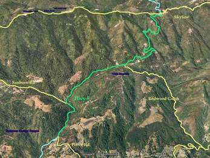

Week 4: Highway 9
04 Nov 2006
|
2006 Low-Key Hillclimbs Week 4: Highway 9 04 Nov 2006 |
|  |
| Aerial photo of Highway 9, courtesy of Stanford Cycling |
| Say cheese! Our very own Sheri Greenspan will again be snapping your pics as you reach the pinnacle. |
Check here for the Saratoga forecast!
Highway 9: the mileage markers serve as a constant reminder of the effort remaining, a relatively steady grade from its beginnings in Saratoga to Skyline above. This week's climb is a Bay area mainstay, not only as a climb in its own right, but as a useful gateway to the Santa Cruz mountains to the west.
We'll save the Santa Cruz Mountains for another day, however. This week Highway 9 is our focus. In stark contrast to nearby Bohlman, next week's friendly companion, Highway 9's relatively modest 6.5% average grade demands less. Which is in a way harder, since it means the rider must demand more of him or herself, reach inside for inspiration not externally imposed, test the will not just to continue but to excel.
Or, leave excelling to next week. Enjoy the company, enjoy the ride.
Our insurance demands it: helmets are required. Sorry kids, no exceptions!
The start this week will be
in Saratoga, at the intersection of Highway 9 and 6th St. No, don't go down 6th St. We know you want to.
Don't worry; you'll have your chance next week...
No, don't go down 6th St. We know you want to.
Don't worry; you'll have your chance next week...
Riding to the start is recommended, but if you drive, there's plenty of parking away from the staging area!
On-line registration is available for a $2 fee from BikeReg.com.
| stats | 6.8 miles, 2090 ft, 5.8% |
| format | mass start |
| time | reg 9 - 9:45 start 10am |
| coordinator | |
| aerial view | Stanford Cycling |
| route profile | ACTC profile ACTC profile page |
| weather | Weather Underground Weather Bonk |
| registration form |
PDF form On-line ($2 fee) |
{kind=link}